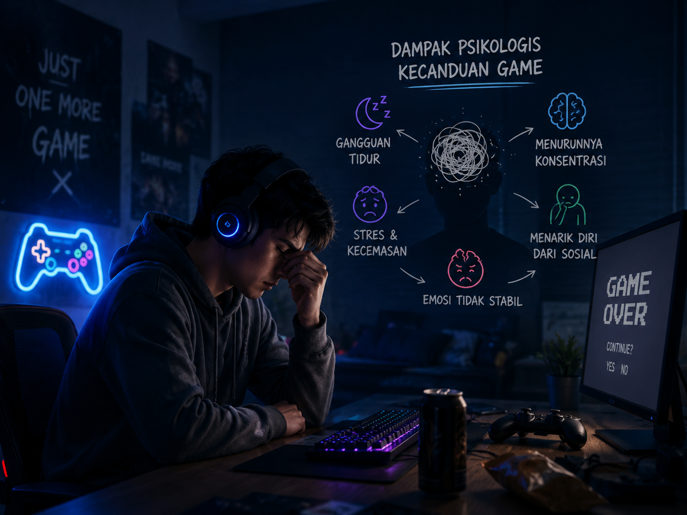
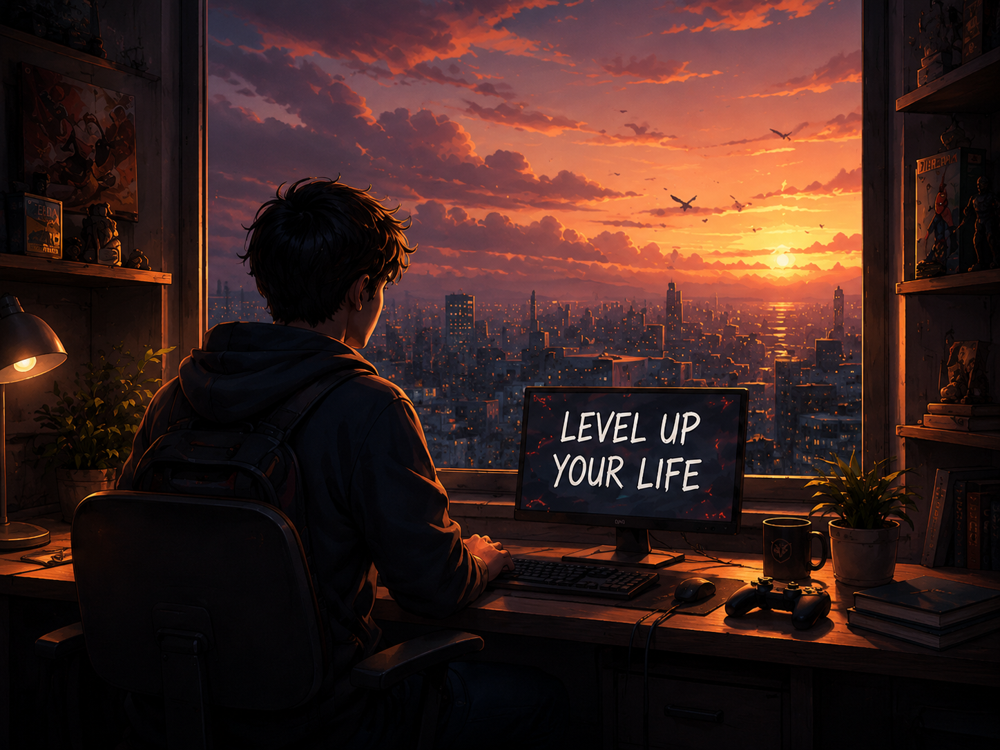
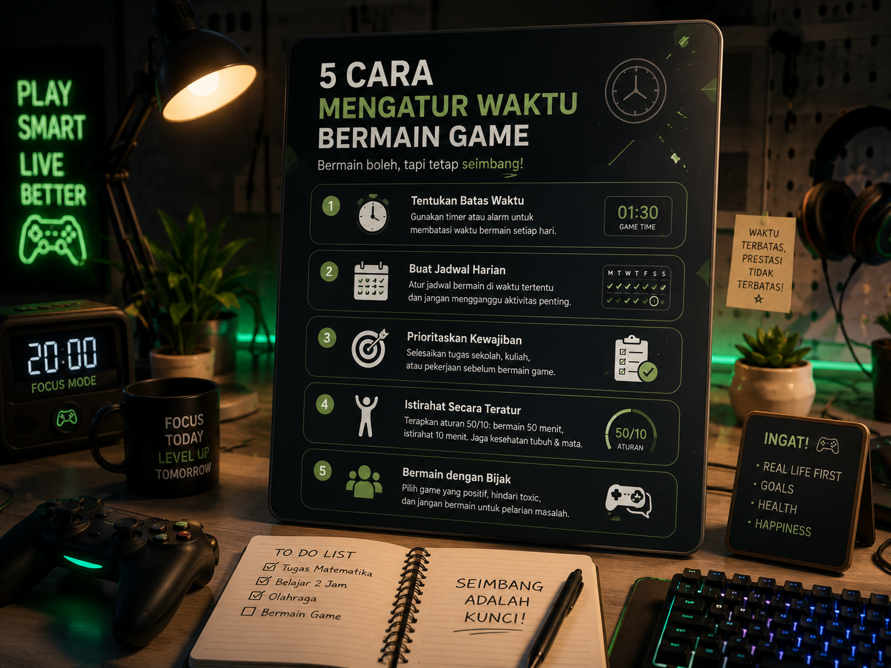
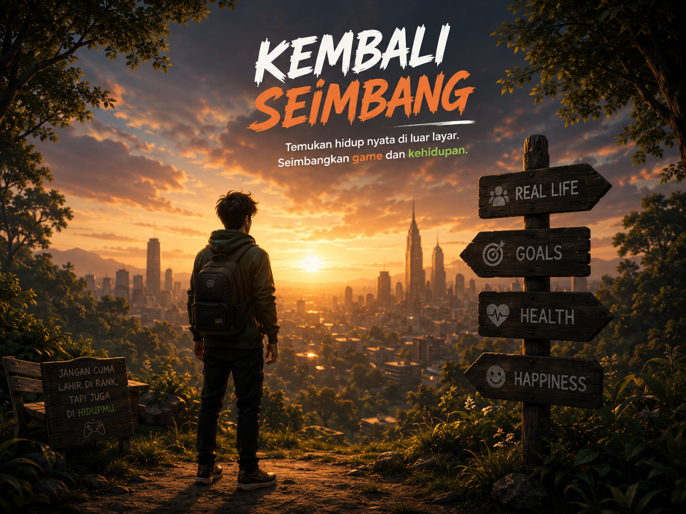
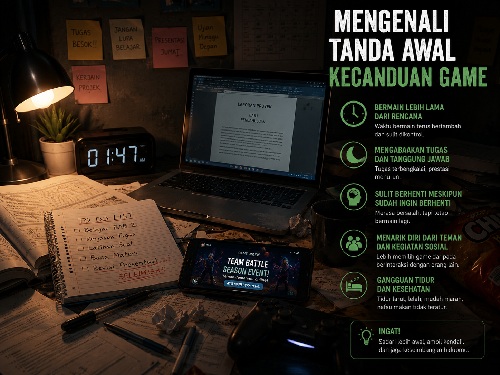
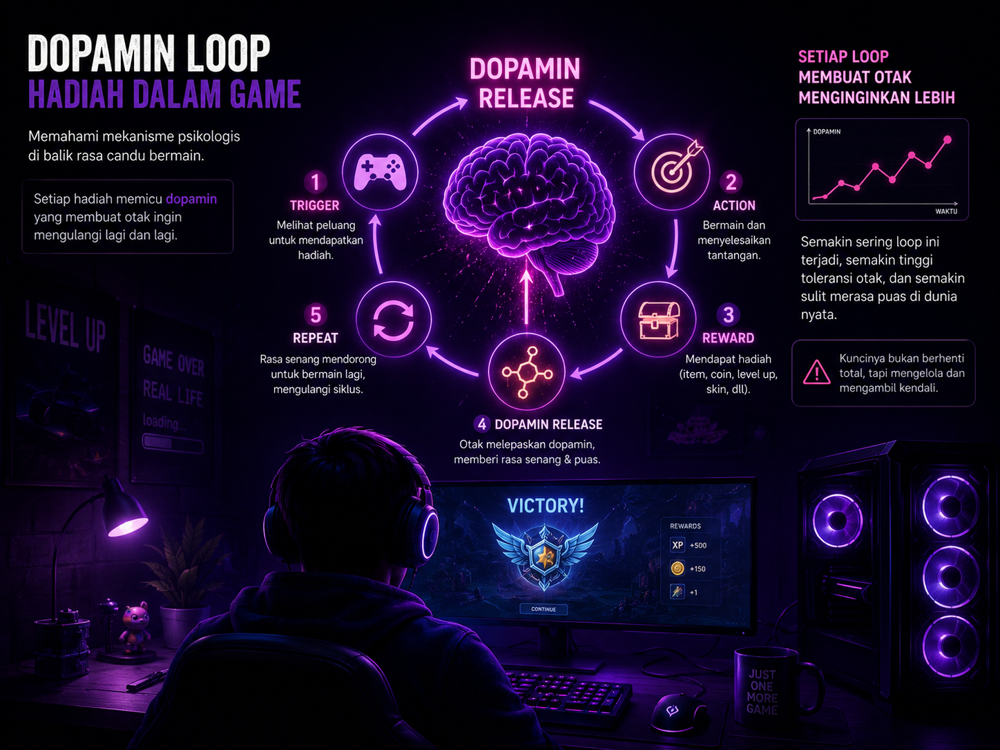

Kenali Diri
Cek seberapa besar kecanduan game-mu melalui self check.
Sadari batasnya, kendalikan dirimu, dan wujudkan hidup yang lebih seimbang.
Cek seberapa besar kecanduan game-mu melalui self check.
Ketahui dampak psikologis dan fisik dari kecanduan game.
Dapatkan tips dan strategi untuk bermain game secara bijak.
Temukan cerita, fakta, dan wawasan dari komunitas dan ahli.
remaja bermain game lebih dari 3 jam per hari
rata-rata waktu bermain gamer berisiko adiksi
gamer berisiko mengalami gangguan tidur & stres
mengalami penurunan prestasi akademik
Jawab beberapa pertanyaan singkat secara jujur. Di akhir, kamu akan mendapat analisis ringan soal pola bermainmu.
Bermain game boleh, tapi tetap sehat & terkendali!
Gunakan timer dan patuhi batas waktu bermain.
Ambil jeda 5–10 menit setiap 1 jam bermain.
Kurang tidur bisa meningkatkan risiko kecanduan.
Luangkan waktu untuk keluarga, teman, dan aktivitas nyata.
Jangan gunakan game sebagai pelarian dari masalah.
Temukan hobi lain yang membuatmu berkembang.

Memahami definisi, tanda, dan perbedaannya dengan hobi.
Baca selengkapnya →
Bagaimana game berlebihan dapat mempengaruhi kesehatan mental.
Baca selengkapnya →
Tips praktis agar tetap seimbang antara game dan kehidupan nyata.
Baca selengkapnya →
Perjalanan nyata keluar dari kecanduan game.
Baca selengkapnya →
Gejala yang sering terlewat sebelum menjadi masalah serius.
Baca selengkapnya →
Alasan psikologis mengapa game terasa sulit dihentikan.
Baca selengkapnya →